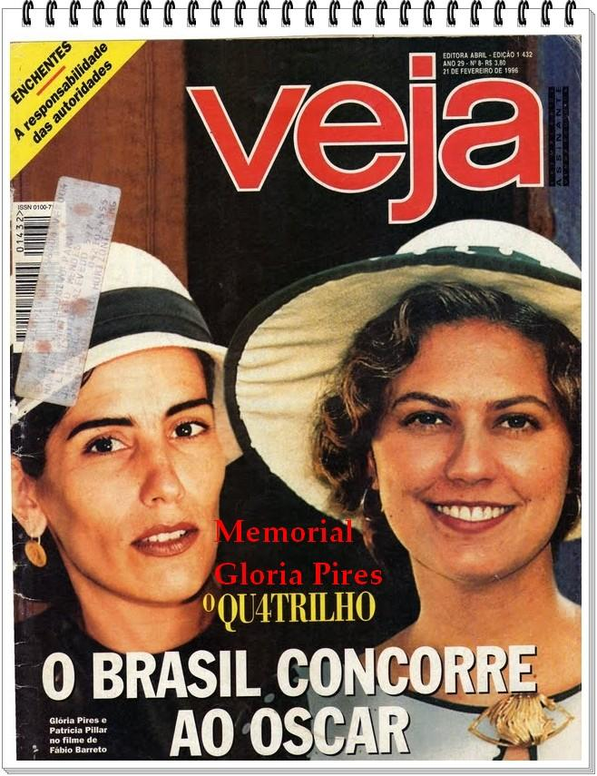
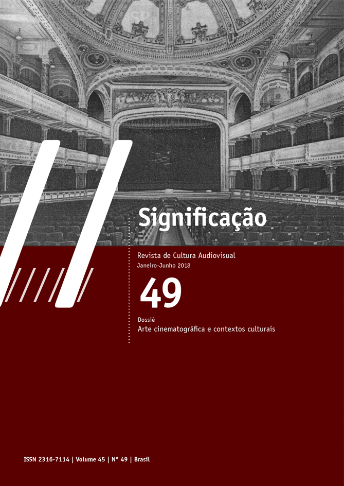
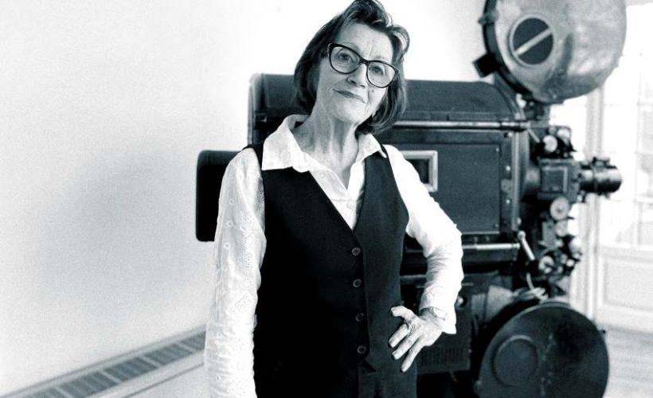
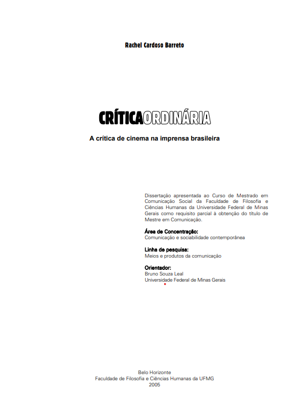
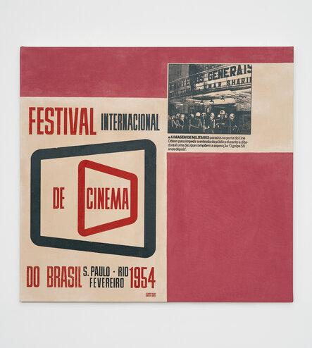
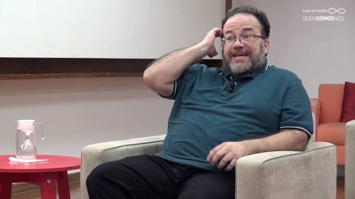
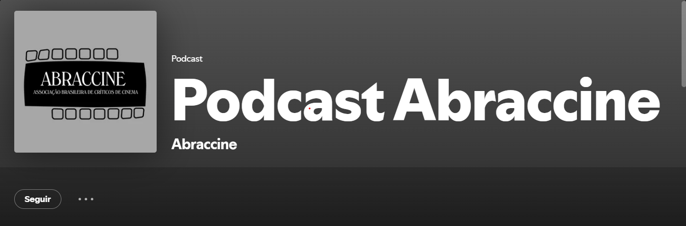

Por que alguns filmes continuam sendo discutidos décadas depois de seu lançamento, enquanto outros perdem espaço no debate cultural? No cinema brasileiro, o reconhecimento de uma obra pode atravessar diferentes gerações e assumir novos significados conforme ela é revista, analisada e contextualizada.
Nesse percurso, a crítica e o jornalismo ajudam a registrar a recepção dos filmes e a construir interpretações sobre sua importância. Mas até que ponto esses textos influenciam o que permanece na história do cinema nacional?

Entre a bilheteria e a repercussão
Lançado em 1976, Dona Flor e Seus Dois Maridos, de Bruno Barreto, tornou-se um dos maiores sucessos comerciais da história do cinema brasileiro. O longa levou milhões de espectadores às salas e permaneceu por décadas entre os recordistas de público do país. Mas sua repercussão não se limitou à bilheteria. Três anos depois da estreia, a revista Filme Cultura publicou, na seção “Dossiês Críticos”, uma seleção de textos nacionais e internacionais sobre a produção.
O material chamou a atenção da pesquisadora Regina Gomes, que retomou essas publicações em um artigo de 2018 para a Significação: Revista de Cultura Audiovisual, da Universidade de São Paulo. Em sua análise, Gomes identifica opiniões divergentes sobre o filme e discussões que ultrapassavam a avaliação da obra em si, alcançando os rumos que o cinema brasileiro deveria seguir. O caso demonstra como uma produção de grande alcance popular também pode se tornar objeto de disputas sobre linguagem, estética e os caminhos da cinematografia nacional.

A relação entre os filmes e a maneira como sua história é contada também passou por transformações no campo acadêmico. Em História e historiografia do cinema brasileiro: objetos do historiador, publicado na revista Especiaria, a historiadora Sheila Schvarzman investiga como o cinema passou a despertar o interesse de pesquisadores da História. Segundo ela, essa aproximação ganhou força com as mudanças promovidas pela chamada Nova História, que ampliou o conjunto de objetos considerados relevantes para a pesquisa histórica. A partir das décadas de 1970 e 1980, filmes e atividades cinematográficas passaram a ser examinados também como fontes para compreender aspectos sociais e culturais de diferentes períodos.
Essa mudança de perspectiva ajuda a contextualizar a variedade de registros que hoje permitem estudar a recepção de uma obra: além dos próprios filmes, há críticas publicadas na época, entrevistas com realizadores, reportagens sobre lançamentos e pesquisas realizadas posteriormente. Cada documento oferece um recorte sobre o contexto em que foi produzido. No caso de Dona Flor e Seus Dois Maridos, o dossiê da Filme Cultura permite observar como críticos daquele período interpretavam uma produção que já havia conquistado um público expressivo.

O jornalista como mediador entre o filme e o público
e as críticas e reportagens ajudam a registrar a recepção de um filme ao longo do tempo, também é necessário observar como esses conteúdos são produzidos e quais aspectos das obras chegam ao público. A abordagem não é a mesma em todos os veículos: o espaço editorial, o perfil da publicação e as escolhas de quem escreve interferem na maneira como uma produção é apresentada.
Essa diferença aparece na dissertação Crítica ordinária: a crítica de cinema na imprensa brasileira, defendida por Rachel Cardoso Barreto na Universidade Federal de Minas Gerais, em 2006. A pesquisadora analisou 63 matérias publicadas em quatro veículos — Folha de S.Paulo, Veja, Set e Bravo! — sobre os filmes Diários de Motocicleta, Elefante, Prisioneiro da Grade de Ferro e Tróia. Ao comparar os textos, Barreto investigou como a crítica se relaciona com as características dos veículos e com o próprio campo cinematográfico.

A cobertura de cinema, entretanto, também envolve conteúdos que não se concentram na avaliação das obras. Um exemplo aparece na pesquisa de Meize Regina de Lucena Lucas, que analisou suplementos culturais de O Estado de S. Paulo e Jornal do Brasil, além da Revista de Cinema, durante a década de 1950. A autora identificou a publicação de notas sobre lançamentos, informes sobre festivais e comentários sobre bastidores de filmagens. Também observou diferenças entre os veículos: enquanto as revistas especializadas dedicavam espaço à vida dos artistas, às técnicas cinematográficas e às produções em andamento, os jornais concentravam maior atenção nos textos sobre os filmes.
No Jornal do Brasil, a cobertura das produções em andamento dividia espaço com a avaliação crítica dos filmes lançados. Segundo Lucas, os jovens realizadores tinham seus trabalhos divulgados nas páginas do suplemento, que também abria espaço para discussões sobre os problemas da produção nacional. A pesquisa permite identificar, nesse caso, uma atuação jornalística que alcançava diferentes etapas da atividade cinematográfica: da realização dos filmes à sua chegada ao público.
Essas publicações não se limitavam, portanto, a registrar se um filme havia sido bem ou mal recebido. Ao noticiar produções em andamento, ouvir profissionais e abordar questões relacionadas à realização e à circulação dos filmes, os veículos também registravam informações sobre o funcionamento do próprio cinema brasileiro.
A pesquisa se refere a um contexto histórico específico, mas ajuda a delimitar as diferentes frentes da cobertura cinematográfica. A crítica, as entrevistas, as notícias e as reportagens produzem registros de naturezas distintas. Observar como esses formatos se organizam hoje exige considerar também as mudanças nos veículos e nos espaços disponíveis para a publicação de conteúdos sobre cinema.

Do jornal às plataformas: onde a crítica encontra seu espaço?
O espaço dedicado ao cinema nos veículos de comunicação também interfere na maneira como os filmes permanecem em discussão. Uma crítica publicada na época da estreia pode apresentar uma obra ao público, mas a continuidade desse debate depende de novas abordagens, revisões e oportunidades para que o filme volte a ser discutido.
O crítico Sérgio Alpendre, que escreve para a Folha de S.Paulo e acompanha a crítica cinematográfica na internet desde os anos 2000, observa diferenças entre esses espaços. Em entrevista à revista Exceção, realizada em 2025, ele comentou as limitações dos jornais de grande circulação, que precisam conciliar a crítica com informações sobre o lançamento, a sinopse e o interesse de um público amplo. Para Alpendre, esse formato muitas vezes se aproxima mais de uma resenha do que de uma análise aprofundada da linguagem cinematográfica.
Na mesma entrevista, o Sérgio relembrou um episódio que ajuda a dimensionar essa mudança. Nos anos 1970, o jornal Folha de S.Paulo publicou uma crítica extensa sobre A Árvore dos Tamancos, de Ermanno Olmi, e voltou ao filme com outro texto uma semana depois. Segundo ele, o crítico Orlando Fassoni considerou necessário retomar a obra porque, em sua avaliação, ela não estava sendo vista como merecia. Para ele, esse tipo de espaço para revisitar um lançamento se tornou raro nos jornais atuais.

Enquanto os espaços dos jornais têm suas limitações, a crítica também passou a circular por sites especializados, blogs, vídeos e podcasts. Um exemplo é o Cinematório, projeto independente de jornalismo cultural criado em 2003, que reúne críticas, entrevistas, notícias e cobertura de festivais. O site também mantém diferentes podcasts, entre eles o Em Foco, dedicado a filmes clássicos e à filmografia de cineastas, e o De Volta Para o Sofá, que retoma produções de décadas anteriores.
A própria Associação Brasileira de Críticos de Cinema (Abraccine) mantém um podcast desde 2019. Entre os episódios publicados estão debates sobre os 40 anos de Pra Frente, Brasil, os filmes de Laís Bodanzky e a trajetória de Inácio Araújo. São iniciativas que levam a discussão cinematográfica para além da crítica escrita e criam novos espaços para retomar filmes e realizadores.
A multiplicação desses canais, porém, não significa que todos os filmes recebam a mesma atenção. A crítica continua disputando espaço com outros conteúdos e depende das escolhas editoriais, dos interesses de cada público e das condições de produção de cada projeto. Nesse cenário, a questão não é apenas onde se fala de cinema, mas quais obras conseguem permanecer em pauta e voltar ao debate mesmo depois de sair de cartaz.

Quem decide o que merece ser lembrado?
Nenhuma lista de grandes filmes é definitiva. O que hoje ocupa um lugar de destaque na história do cinema pode ser questionado amanhã, assim como obras pouco reconhecidas em seu lançamento podem ganhar importância com o passar dos anos. O problema começa quando o reconhecimento de algumas produções passa a ser tratado como uma medida incontestável de valor, enquanto outras sequer encontram espaço para serem conhecidas.
É nesse ponto que a atuação do jornalista ganha uma dimensão que ultrapassa a cobertura cultural. Ao lidar com o cinema, ele também lida com disputas de reconhecimento: quais obras são consideradas relevantes, quais perspectivas recebem atenção e quais produções continuam fora do debate. Não se trata de substituir um cânone por outro ou de atribuir à imprensa o poder de determinar a importância de um filme, mas de não reproduzir automaticamente as hierarquias já estabelecidas.
Afinal, a história do cinema não é feita apenas dos filmes que sobreviveram ao tempo, mas também dos olhares que foram lançados sobre eles. Se o jornalismo participa dessa construção, sua responsabilidade está também em manter abertas as perguntas sobre o que chamamos de importante, quem tem o direito de contar essa história e quais filmes ainda precisam ser descobertos.